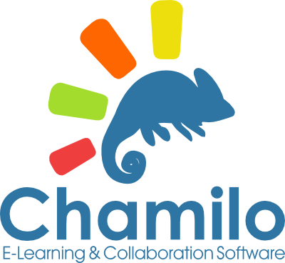

Chamilo LMS es una plataforma LMS opensource, permite la creación de entornos virtuales de forma gratuita. Esta plataforma se puede instalar en plataformas como windows, OS-X de Apple y Linux.
Chamilo tiene algunas características, entre ellas:
- Licencia GNU.
- Multi Idiomas.
- Permite Adaptarse a diferentes modelos educativos.
- Permite tener diferentes Roles dentro de la plataforma.
- Compatibilidad con SCORM V 1.2
- Red social de aprendizaje con la creación de grupos de interés.
- Videoconferencias
- Compatibilidad con vídeos de realidad virtual (Vídeos en 360 º formato MP4)
- Integración con HTML 5
- Chats, Foros, compartimiento de información en redes sociales.
Entre las ventajas que ofrece Chamilo se tiene: es personalizable y adaptable a diferentes proyectos, fácil de usar, posee herramientas de seguimiento y gestión, tiene notificaciones de eventos y tareas, permite trabajos colaborativos en grupo, acepta paquetes SCORM, permite una gran gestión documentaría, permite realizar videoconferencia [3].
A continuación se muestra un videotutorial del uso de esta herramienta: